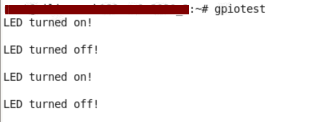

Boot and Configuration¶
The purpose of this chapter is to show how to integrate and load boot loaders, bare-metal applications (For APU/RPU), and the Linux Operating System for a Versal™ ACAP. This chapter discusses the following topics:
System software: PLM, Arm® trusted firmware (ATF), U-Boot
Steps to generate boot image for standalone application.
Boot sequences for SD-boot, and QSPI and OSPI boot modes.
You can achieve these configurations using the Vitis™ software platform and the PetaLinux tool flow. While Versal ACAP CIPS and NoC (DDR) IP Core Configuration focused only on creating software blocks for each processing unit in the PS, this chapter explains how these blocks can be loaded as a part of a bigger system.
System Software¶
The following system software blocks cover most of the boot and configuration for this chapter.
Platform Loader and Manager¶
The platform loader and manager (PLM) is the software that runs on one of the dedicated processors in the Platform Management Controller (PMC) block of the Versal ACAP. It is responsible for boot and run time management, including platform management, error management, partial reconfiguration, and subsystem restart of the device. The PLM can reload images, and load partial PDIs and service interrupts. The PLM reads the programmable device image from the boot source and configures the components of the system including the NoC initialization, DDR memory initialization, programmable logic, and processing system, and then completes the device boot.
U-Boot¶
U-Boot acts as a secondary boot loader. After the PLM handoff, U-Boot loads Linux onto the Arm A72 APU and configures the rest of the peripherals in the processing system based on the board configuration. U-Boot can fetch images from different memory sources like eMMC, SATA, TFTP, SD, and QSPI. U-Boot can be configured and built using the PetaLinux tool flow.
Arm Trusted Firmware¶
The Arm Trusted Firmware (ATF) is a transparent bare-metal application layer executed in Exception Level 3 (EL3) on the APU. The ATF includes a Secure Monitor layer for switching between the secure and the non-secure world. The Secure Monitor calls and implementation of Trusted Board Boot Requirements (TBBR) makes the ATF layer a mandatory requirement to load Linux on the APU on Versal ACAP. The PLM loads the ATF to be executed by the APU, which keeps running in EL3 awaiting a service request. The PLM also loads U-Boot into DDR to be executed by the APU, which loads Linux OS in SMP mode on the APU. The ATF (bl31.elf) is built by default in PetaLinux and can be found in the PetaLinux Project images directory.
Generating Boot Image for Standalone Application¶
The Vitis software platform does not support automatic boot image creation for Versal architecture. To generate a bootable image, use Bootgen, which is a command line utility which is part of the Vitis software platform package. The principle function of Bootgen is to integrate the various partitions of the bootable image. Bootgen uses a Bootgen Image Format (BIF) file as an input and generates a single file image in binary BIN or PDI format. It outputs a single file image which can be loaded into non-volatile memory (NVM) (QSPI or SD Card). Use the following steps to generate a PDI/BIN file:
Open the XSCT Console view in the Vitis IDE, if not already open, by clicking on Window → Show View. Type
xsct consolewithin the search bar of the Show View wizard. Click Open to open the console.
Create a folder where you want to generate the boot image by typing the following command in the XSCT Console:
mkdir bootimages cd bootimages/
Copy the sd_boot.bif file present within the
<design-package>/<board-name>/standalone/<cips or cips_noc>/<apu or rpu>/directory, the PDI file present within<Vitis platform project>/hw/<.pdi-file>, and the application elf files present within the<Vitis application-project>/Debugfolder to the folder created in step 2.Note: If needed, open the
sd_boot.biffile in a text editor of your choice and modify the name of the PDI or elfs as per your Vitis projects.Run the following command in the XSCT Console view.
bootgen -image <bif filename>.bif -arch versal -o BOOT.BINThe following log is displayed in the XSCT Console view.
Boot Sequence for SD-Boot Mode¶
The following steps demonstrate the boot sequence for the SD-boot mode.
To verify the image, copy the required images to the SD card:
For standalone, copy the
BOOT.BINto the SD card.For Linux images, navigate to the
<plnx-proj-root>/images/linuxand copyBOOT.BIN,image.ub, andboot.scrto the SD card.
Note: You can either boot the VCK190/VMK180 board using the ready-to-test images as part of the released package path,
<design-package>/<vck190 or vmk180>/linux/bootimages, or refer to Example Project: Creating Linux Images Using PetaLinux to build your own set of Linux images using the PetaLinux tool.Load the SD card into the VMK180/VCK190 board, in the J302 connector.
Connect the Micro USB cable into the VMK180/VCK190 Board Micro USB port (J207), and the other end into an open USB port on the host machine.
Configure the board to boot in SD-Boot mode by setting switch SW1 as shown in the following figure.

Connect 12V power to the VMK180/VCK190 6-Pin Molex connector.
Start a terminal session, using Tera Term or Minicom depending on the host machine being used. Set the COM port and baud rate for your system, as shown in the following figure.
For port settings, verify COM Port in the device manager and select the com port with interface-0.
Turn on the VMK180/VCK190 board using the power switch (SW13).
Note: For standalone images, the respective logs are displayed on the terminal. For Linux images, you can log in using user: root and pw: root after the boot-up sequence on the terminal. After that, run gpiotest on the terminal. You will see logs as shown in the following figure. ` 
Boot Sequence for QSPI Boot Mode¶
This section demonstrates the boot sequence for the QSPI boot mode. For this, you need to connect a QSPI daughter card (part number: X_EBM-01, REV_A01) as shown in the following figure:
Figure 2: Daughter Card on VCK190
Note: For standalone, copy the BOOT.BIN to the SD card. For Linux images, you can either boot the VCK190/VMK180 board using the ready-to-test images as part of the released package path,
<design-package>/<vck190 or vmk180>/linux/bootimages, or refer to Example Project: Creating Linux Images Using PetaLinux to build your own set of Linux images using the PetaLinux tool.
You need to flash the images to the daughter card, using the following steps:
With the card powered off, install the daughter card.
Set the boot mode switch SW1 to ON-OFF-OFF-OFF as shown in the following figure.

Insert the SD card in the SD card slot on the board, as follows:

Power on the board. At the U-Boot stage, when the message “Hit any key to stop autoboot:” appears, hit any key, then run the following commands to flash the images on the QSPI daughter card:
sf probe 0 0 0 sf erase 0x0 0x10000000 fatload mmc 0 0x80000 boot.bin sf write 0x80000 0x0 ${filesize} fatload mmc 0 0x80000 image.ub sf write 0x80000 0xF00000 0x6400000 fatload mmc 0 0x80000 boot.scr sf write 0x80000 0x7F80000 0x999After flashing the images, turn off the power switch on the board, and change the boot mode pin settings to QSPI mode, that is ON-OFF-ON-ON as follows:
Power cycle the board. The board now boots up using the images in the QSPI flash.
© Copyright 2020-2021 Xilinx, Inc.
Licensed under the Apache License, Version 2.0 (the “License”); you may not use this file except in compliance with the License. You may obtain a copy of the License at http://www.apache.org/licenses/LICENSE-2.0.
Unless required by applicable law or agreed to in writing, software distributed under the License is distributed on an “AS IS” BASIS, WITHOUT WARRANTIES OR CONDITIONS OF ANY KIND, either express or implied. See the License for the specific language governing permissions and limitations under the License.